NEWDEAL INVEST · 11.10.2024
NDI Exclusive interview with Spire Global CEO Peter Platzer
Om Spire Global
Se på YouTube ↗
Spire GlobalSelskab Faktaark (KID) og prospekt for PMINDI (åbner i nyt vindue)Et af fondens selskaber i temaet Rumfart
Bygger og driver små satellitter og sælger data om vejr, fly og radiosignaler.
NYSE: SPIRUSA
Andel af PMINDIpr. …
…%
Teksten er senest gennemgået 14.11.2026.
Spires små satellitter lytter til radiosignaler fra hele jorden. Ud fra dem leverer Spire data om vejret, følger fly, også over havet, og opdager, når nogen forstyrrer navigationssignaler. Kunderne er myndigheder og virksomheder, der bruger dataene til at træffe beslutninger.
Kunderne er myndigheder og virksomheder inden for blandt andet landbrug, logistik, forsikring, luftfart og energi. Satellitterne leverer data til vejrudsigter og til at følge fly, også over hav. De bruges også til at finde jamming og spoofing, altså bevidst forstyrrelse eller forfalskning af radiosignaler. Med Space Services kan kunder få egne instrumenter i kredsløb på Spires platform. Den 25.4.2025 solgte Spire sin maritime forretning til Kpler Holding SA for cirka 238,9 mio. dollar. Salget omfattede ikke satellitnettet.
Spire tjener penge, når kunder betaler for data og for Spires platform. En stor del kommer fra abonnementer, som typisk løber et til to år og ofte betales forud hver måned eller hvert kvartal. Andre betaler for enkeltstående opgaver som udviklingsprojekter. Under Space Services betaler kunder også for, at Spire sender deres instrumenter i kredsløb og driver dem. Indtjeningen afhænger af antallet af abonnementer og projekter og af udgifterne til satellitter og jordstationer.
De gule pile viser, hvordan kunderne betaler Spire: løbende for abonnementer og pr. opgave for projekter.
I 2025 var omsætningen 71,6 mio. dollar, og 77 % kom fra abonnementer. Én kunde, der består af flere amerikanske myndigheder, stod for 24 %.
Den amerikanske vejrtjeneste NOAA er en vigtig kunde. I august og september 2026 fik Spire to nye opgaver fra NOAA for i alt 61,2 mio. dollar om vejrdata og udstyr til vejrmålinger. I oktober 2026 opsendte Spire de første tre satellitter bygget i Boulder i Colorado, og selskabet har også åbnet en fabrik i München.
Kilde til risiciene: Spire Globals årsrapport for 2025 (Form 10-K, indleveret 19.3.2026), afsnittet om risikofaktorer. Investering indebærer altid risiko, og du kan tabe hele investeringen (risici ved fonden). Teksten er AI-genereret ud fra Spire Globals egne oplysninger, bl.a. årsrapporten for 2025 og investorpræsentationen fra november 2026, og er ikke manuelt faktatjekket af NewDeal Invest. Kilder og metode.
Henter nøgletal …
Om tallene. Spire havde et overskud på 51,3 mio. dollar i 2025, men et underskud på 91,2 mio. dollar de seneste 12 måneder til 30.9.2026. Forskellen skyldes først og fremmest en gevinst på 154,3 mio. dollar ved salget af den maritime forretning i 2. kvartal 2025. Gevinsten indgår i resultatet for 2025, men ikke i de seneste 12 måneder.
Grafen viser aktiens lukkekurs i den valuta, aktien handles i.
Udvalgte offentlige opslag. Opslagene vises med deres oprindelige afsender. Eksterne afsenderes synspunkter er ikke nødvendigvis NewDeal Invests.
Henter opslag …
VIDEOER OG OPSLAG
NEWDEAL INVEST · 11.10.2024
Om Spire Global
Se på YouTube ↗Beskrivelsen sammenfatter de angivne kilder og kan indeholde fejl, udeladelser eller forældede oplysninger. Den er ikke en selvstændig selskabsanalyse eller anbefaling fra NewDeal Invest. NewDeal Invests egne kommentarer vises særskilt med afsender og kilde. Fondens beholdninger og afkast vises med deres eget datagrundlag og opgørelsesdato.